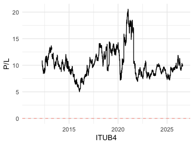
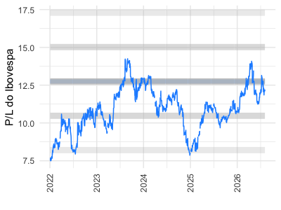

No universo quantamental, a análise de dados não se limita a um único ponto no tempo. Acompanhar a evolução de indicadores ao longo do tempo, ou séries temporais, é fundamental para entender tendências, ciclos e a resiliência de empresas e mercados.
Indicadores
Neste capítulo, exploraremos como visualizar e interpretar o indicador Preço/Lucro (P/L) sob a ótica temporal, tanto para uma empresa individual quanto para um índice de mercado como o IBOV.
NoteLoading objects…
code
ontology <- DAL_Ontology$new()
ontology healthcheck validation...
23 sectors and 171 assets
indexes updated at 2026-05-05 (IBOV~60%=12) (IBOV~90%=38) (IBOV=79) (SMLL=110)
code
quantamental <- DAL_Quantamental$new()
quantamental healthcheck validation...
Preço e Lucro: O Caso ITUB4
O Preço/Lucro (P/L) é um dos múltiplos de valuation mais utilizados, indicando quantos anos de lucro a empresa levaria para “pagar” seu preço de mercado. Para setores mais estáveis, como o bancário ou serviços públicos no Brasil, o P/L tende a apresentar uma volatilidade menor, refletindo a previsibilidade de seus resultados.
Vamos observar a evolução do P/L de ITUB4 ao longo dos últimos anos. Isso nos permite identificar o patamar histórico de valuation da empresa e compará-lo com o momento atual.

NoteCódigo para gerar esse gráfico…
code
library(tidyverse) start_time=Sys.time() ; df <- quantamental$asset(time_series_sample_1) ; d <-difftime(Sys.time(), start_time, units ="secs") ; cat(sprintf(paste0("Tempo para carregar os dados de ",time_series_sample_1," : %.5f %s"), as.numeric(d), attr(d, "units")))
Tempo para carregar os dados de ITUB4 : 0.02661 secs
Um P/L em patamares historicamente baixos pode indicar que a ação está subvalorizada, enquanto um P/L elevado pode sugerir que o mercado tem altas expectativas de crescimento futuro ou que a ação está sobrevalorizada. A estabilidade do P/L em setores mais defensivos reflete a natureza mais previsível de seus lucros e a menor sensibilidade a ciclos econômicos extremos, em comparação com setores mais cíclicos.
P/L do IBOV: Por que a Mediana Importa?
Analisar o P/L de um índice como o IBOV é mais complexo do que para uma única empresa. O IBOV é composto por dezenas de empresas, e a média simples do P/L pode ser facilmente distorcida por outliers – empresas com lucros muito baixos (P/L altíssimo) ou até prejuízo (P/L negativo, que não faz sentido para a média).
É aqui que a mediana se torna uma ferramenta poderosa. A mediana representa o valor central de uma distribuição, sendo menos sensível a valores extremos. Ao calcular o P/L mediano do IBOV, obtemos uma visão mais realista do valuation geral do mercado, sem as distorções causadas por empresas atípicas.
NoteCódigo para gerar esse gráfico…
code
start_time=Sys.time() ; assets_from_IBOV_df <- quantamental$query() |>filter(asset %in% ontology$get_b3_index()$IBOV$asset) |>collect() |>group_by(date) |>summarise(median_pe=median(pe,na.rm=T),N=n()) ; d <-difftime(Sys.time(), start_time, units ="secs") ; cat(sprintf(paste0("Tempo para carregar os dados do índice IBOV : %.5f %s"), as.numeric(d), attr(d, "units")))
Tempo para carregar os dados do índice IBOV : 0.12468 secs
code
start_time=Sys.time() ; IBOV_SD_df <- quantamental$query() |>filter(asset %in% ontology$get_b3_index()$IBOV$asset) |>collect() |>group_by(date) |>summarise(median_ibov=median(pe,na.rm=T)) ; d <-difftime(Sys.time(), start_time, units ="secs") ; cat(sprintf(paste0("Tempo para carregar desvio-padrão histórico de IBOV: %.5f %s"), as.numeric(d), attr(d, "units")))
Tempo para carregar desvio-padrão histórico de IBOV: 0.10754 secs
code
time_series_sample_1_index_png <-file.path("plots",paste0("pe_",time_series_sample_1,"_index.png"))png(time_series_sample_1_index_png, width =400, height =300, res =100)plot <- assets_from_IBOV_df |>left_join(IBOV_SD_df,by="date") |>mutate(mean_pe_ibov=mean(median_ibov,na.rm=T),sd_pe_ibov=sd(median_ibov,na.rm=T)) |>mutate(mean_pe=mean(median_pe,na.rm=T),sd_pe=sd(median_pe,na.rm=T)) |>filter(year(date)>=2022) |>ggplot(aes(date,median_pe))+geom_line(aes(y=mean_pe),color="dodgerblue1",alpha=.5,linewidth=2)+geom_line(aes(y=mean_pe_ibov),color="gray",alpha=.8,linewidth=3)+geom_line(aes(y=mean_pe_ibov-sd_pe_ibov*1),color="gray",alpha=.5,linewidth=3)+geom_line(aes(y=mean_pe_ibov+sd_pe_ibov*1),color="gray",alpha=.5,linewidth=3)+geom_line(aes(y=mean_pe_ibov-sd_pe_ibov*2),color="gray",alpha=.3,linewidth=3)+geom_line(aes(y=mean_pe_ibov+sd_pe_ibov*2),color="gray",alpha=.3,linewidth=3)+geom_line(color="dodgerblue1")+ylab("P/L do Ibovespa")+xlab("")+theme_minimal()+scale_x_date(date_breaks="1 year",date_labels="%Y")+theme(axis.text.x=element_text(angle=90,vjust=.5,hjust=1))plot(plot)dev.off()
quartz_off_screen
2
Vantagens da Mediana para Índices
Em mercados voláteis ou com empresas em diferentes estágios de maturidade, a mediana oferece uma medida de tendência central mais estável e representativa. Ela evita que uma única empresa com um P/L extremamente alto ou baixo distorça a percepção do valuation do índice como um todo, fornecendo um benchmark mais confiável para comparação.

Conceitos mais avançados
Integração com os grupos de ativos: Conecte os dados de P/L e outros múltiplos com entre ativos similares.
TipConexão com a Ontologia
O caminho estatístico dá a “ferramenta”, mas a Ontologia e a Similaridade (que discutimos antes) dão o “alvo”. A estatística diz como operar, e a ontologia diz quem operar (escolhendo pares que fazem sentido fundamentalista).
Análise de grupos de índices
Análise de Setores: Compare a evolução do P/L mediano de diferentes setores da B3 para identificar quais estão mais “caros” ou “baratos” historicamente.
Bandas de Valuation: Crie bandas de valuation (ex: P/L +/- 1 desvio padrão) para identificar quando um ativo ou índice está em patamares extremos de valuation.
Price Action e Microestrutura: Vá além dos indicadores técnicos convencionais e explore a dinâmica entre Preço e Volume. Utilize séries temporais de alta frequência para calcular indicadores de liquidez e pressão compradora/vendedora, como o VWAP (Volume Weighted Average Price) e a volatilidade realizada. No contexto quantamental, essas variáveis alimentam a família de Momentum, ajudando a identificar se o mercado está confirmando a tese fundamentalista ou se há uma divergência entre o valor intrínseco e o valor de tela.
Dica de Fluxo: O Price Action serve como o “filtro de realidade”. Se a ontologia indica uma empresa excelente e barata (Valuation), mas o Price Action mostra uma tendência de queda com volume crescente, o modelo quantamental sinaliza um possível “Value Trap” ou um risco ainda não capturado nos balanços.
Cointegração: Evolua da análise descritiva básica para a modelagem preditiva avançada. Comece dominando conceitos de estacionariedade e autocorrelação (funções ACF/PACF), avance para regressões lineares simples aplicadas ao tempo e, em seguida, explore regressões dinâmicas que incorporam variáveis externas (ex: impacto da Selic no P/L). O estágio final desta jornada é a implementação de Modelos de Espaço de Estados, utilizando o Filtro de Kalman para estimar parâmetros que mudam ao longo do tempo, permitindo que o seu modelo quantamental se adapte automaticamente a novas condições de mercado sem a necessidade de janelas fixas de rolagem (rolling windows).
TipCointegração
Podemos afirmar que essa jornada estatística é o alicerce indispensável para entender a cointegração de forma profunda e não apenas como uma “fórmula pronta”.
1. A Escada da Cointegração
Para entender a cointegração (que é, simplificadamente, quando dois ativos “caminham juntos” no longo prazo, apesar de flutuações curtas), você precisa obrigatoriamente passar por esses degraus: * Estacionariedade: Você não consegue entender cointegração sem saber o que é uma série estacionária. A cointegração é, por definição, a busca por uma combinação linear de duas séries não-estacionárias que resulte em uma série estacionária. * Regressão Linear: O “Hedge Ratio” (a proporção de um ativo em relação ao outro) é o coeficiente \(\beta\) de uma regressão. Se você não domina a regressão, não entende como o modelo tenta equilibrar os dois ativos.
2. O Salto para a Cointegração Dinâmica
A maioria dos tutoriais para em testes estáticos (como Engle-Granger). Porém, no mercado real, a relação entre duas empresas (ex: Itaú e Bradesco) muda. É aqui que o Filtro de Kalman se torna o “chefe final”: * Em vez de um \(\beta\) fixo, o Filtro de Kalman permite um \(\beta\) variante no tempo. * Isso significa que você está fazendo Cointegração Dinâmica, que é o estado da arte para estratégias de Pairs Trading.
Mapa da Jornada: Do Básico à Cointegração Dinâmica
Abaixo apresentamos a trilha de aprendizado sugerida para dominar a análise quantamental de séries temporais. Esta jornada é incremental: cada nível fornece as ferramentas matemáticas necessárias para o próximo passo.
Visualização da Jornada
graph TD
A[<b>Nível 1: Fundamentos</b><br/>Média, Mediana, Variância] --> B[<b>Nível 2: Séries Temporais</b><br/>Estacionariedade, ACF/PACF]
B --> C[<b>Nível 3: Modelagem Linear</b><br/>Regressão OLS, Beta, Resíduos]
C --> D[<b>Nível 4: Cointegração Estática</b><br/>Teste Engle-Granger, Reversão à Média]
D --> E[<b>Nível 5: Modelos Dinâmicos</b><br/>Filtro de Kalman, Beta Variante]
E --> F[<b>Nível 6: Estratégia</b><br/>Pairs Trading, Arbitragem Estatística]
style A fill:#f9f,stroke:#333,stroke-width:2px
style F fill:#00ff00,stroke:#333,stroke-width:4px
style D fill:#bbf,stroke:#333,stroke-width:2px
style E fill:#bbf,stroke:#333,stroke-width:2px
O que esperar de cada nível?
Fundamentos: Entender a distribuição dos dados e por que a mediana é mais robusta que a média em indicadores de valuation.
Séries Temporais: Aprender a identificar se uma série é “estacionária” (se comporta de forma previsível ao redor de uma média) ou se possui raiz unitária.
Modelagem Linear: Estimar a relação de dependência entre dois ativos (o famoso Beta do Hedge).
Cointegração Estática: O primeiro grande marco. Encontrar pares de ativos que, embora flutuem, mantêm uma relação de equilíbrio de longo prazo.
Modelos Dinâmicos (Filtro de Kalman): A sofisticação técnica. Permitir que o modelo aprenda que a relação entre os ativos muda com o tempo, ajustando o Beta dinamicamente.
Estratégia: A aplicação prática em portfólios reais, utilizando a arbitragem estatística para lucrar com desvios temporários do equilíbrio.
Dica Quantamental: A cointegração não é apenas matemática; ela deve ser validada pela Ontologia. Um par cointegrado estatisticamente só é confiável se houver uma razão fundamentalista (mesmo setor, mesma cadeia de suprimentos) para eles caminharem juntos.
Referências
Este tutorial se baseia em conceitos de finanças quantitativas e análise fundamentalista. Para aprofundar nos temas abordados, sugerimos as seguintes leituras: